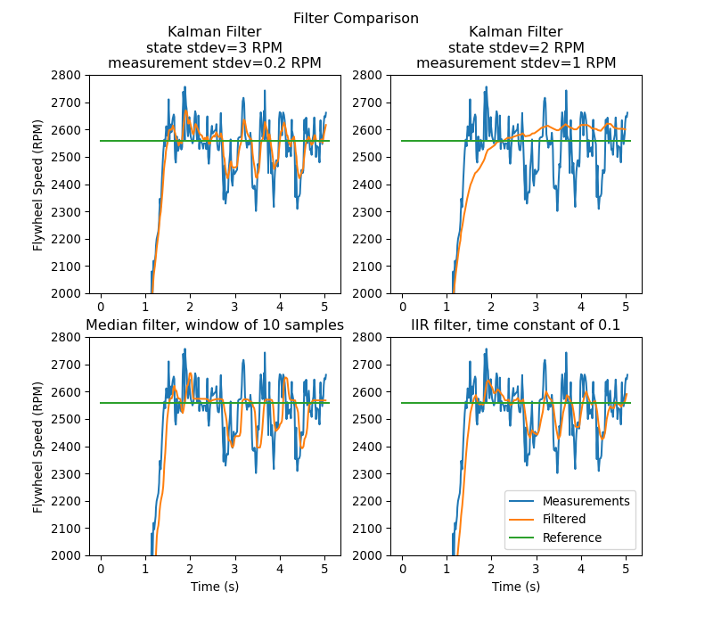

State-Space Controller Walkthrough
Note
Before following this tutorial, readers are recommended to have read an Introduction to State-Space Control.
The goal of this tutorial is to provide “end-to-end” instructions on implementing a state-space controller for a flywheel. By following this tutorial, readers will learn how to:
Create an accurate state-space model of a flywheel using system identification or CAD software.
Implement a Kalman Filter to filter encoder velocity measurements without lag.
Implement a LQR feedback controller which, when combined with model-based feedforward, will generate voltage inputs to drive the flywheel to a reference.
This tutorial is intended to be approachable for teams without a great deal of programming expertise. While the WPILib library offers significant flexibility in the manner in which its state-space control features are implemented, closely following the implementation outlined in this tutorial should provide teams with a basic structure which can be reused for a variety of state-space systems.
The full example is available in the state-space flywheel (Java/C++) and state-space flywheel system identification (Java/C++) example projects.
Why Use State-Space Control?
Because state-space control focuses on creating an accurate model of our system, we can accurately predict how our model will respond to control inputs. This allows us to simulate our mechanisms without access to a physical robot, as well as easily choose gains that we know will work well. Having a model also allows us to create lagless filters, such as Kalman Filters, to optimally filter sensor readings.
Modeling Our Flywheel
Recall that continuous state-space systems are modeled using the following system of equations:
Where x-dot is the rate of change of the system’s state, \(\mathbf{x}\) is the system’s current state, \(\mathbf{u}\) is the input to the system, and \(\mathbf{y}\) is the system’s output.
Let’s use this system of equations to model our flywheel in two different ways. We’ll first model it using system identification using the SysId toolsuite, and then model it based on the motor and flywheel’s moment of inertia.
The first step of building up our state-space system is picking our system’s states. We can pick anything we want as a state – we could pick completely unrelated states if we wanted – but it helps to pick states that are important. We can include hidden states in our state (such as elevator velocity if we were only able to measure its position) and let our Kalman Filter estimate their values. Remember that the states we choose will be driven towards their respective references by the feedback controller (typically the Linear-Quadratic Regulator since it’s optimal).
For our flywheel, we care only about one state: its velocity. While we could chose to also model its acceleration, the inclusion of this state isn’t necessary for our system.
Next, we identify the inputs to our system. Inputs can be thought of as things we can put “into” our system to change its state. In the case of the flywheel (and many other single-jointed mechanisms in FRC®), we have just one input: voltage applied to the motor. By choosing voltage as our input (over something like motor duty cycle), we can compensate for battery voltage sag as battery load increases.
A continuous-time state-space system writes x-dot, or the instantaneous rate of change of the system’s system's state, as proportional to the current state and inputs. Because our state is angular velocity, \(\mathbf{\dot{x}}\) will be the flywheel’s angular acceleration.
Next, we will model our flywheel as a continuous-time state-space system. WPILib’s LinearSystem will convert this to discrete-time internally. Review state-space notation for more on continuous-time and discrete-time systems.
Modeling with System Identification
To rewrite this in state-space notation using system identification, we recall from the flywheel state-space notation example, where we rewrote the following equation in terms of \(\mathbf{a}\).
Where \(\mathbf{v}\) is flywheel velocity, \(\mathbf{a}\) and \(\mathbf{\dot{v}}\) are flywheel acceleration, and \(V\) is voltage. Rewriting this with the standard convention of \(\mathbf{x}\) for the state vector and \(\mathbf{u}\) for the input vector, we find:
The second part of state-space notation relates the system’s current state and inputs to the output. In the case of a flywheel, our output vector \(\mathbf{y}\) (or things that our sensors can measure) is our flywheel’s velocity, which also happens to be an element of our state vector \(\mathbf{x}\). Therefore, our output matrix is \(\mathbf{C} = \begin{bmatrix}1 \end{bmatrix}\), and our system feedthrough matrix is \(\mathbf{D} = \begin{bmatrix}0 \end{bmatrix}\). Writing this out in continuous-time state-space notation yields the following.
The LinearSystem class contains methods for easily creating state-space systems identified using system identification. This example shows a flywheel model with a kV of 0.023 and a kA of 0.001:
33 // Volts per (radian per second)
34 private static final double kFlywheelKv = 0.023;
35
36 // Volts per (radian per second squared)
37 private static final double kFlywheelKa = 0.001;
38
39 // The plant holds a state-space model of our flywheel. This system has the following properties:
40 //
41 // States: [velocity], in radians per second.
42 // Inputs (what we can "put in"): [voltage], in volts.
43 // Outputs (what we can measure): [velocity], in radians per second.
44 //
45 // The Kv and Ka constants are found using the FRC Characterization toolsuite.
46 private final LinearSystem<N1, N1, N1> m_flywheelPlant =
47 LinearSystemId.identifyVelocitySystem(kFlywheelKv, kFlywheelKa);
17#include <frc/system/plant/LinearSystemId.h>
32 // Volts per (radian per second)
33 static constexpr auto kFlywheelKv = 0.023_V / 1_rad_per_s;
34
35 // Volts per (radian per second squared)
36 static constexpr auto kFlywheelKa = 0.001_V / 1_rad_per_s_sq;
37
38 // The plant holds a state-space model of our flywheel. This system has the
39 // following properties:
40 //
41 // States: [velocity], in radians per second.
42 // Inputs (what we can "put in"): [voltage], in volts.
43 // Outputs (what we can measure): [velocity], in radians per second.
44 //
45 // The Kv and Ka constants are found using the FRC Characterization toolsuite.
46 frc::LinearSystem<1, 1, 1> m_flywheelPlant =
47 frc::LinearSystemId::IdentifyVelocitySystem<units::radian>(kFlywheelKv,
48 kFlywheelKa);
Modeling Using Flywheel Moment of Inertia and Gearing
A flywheel can also be modeled without access to a physical robot, using information about the motors, gearing and flywheel’s moment of inertia. A full derivation of this model is presented in Section 8.2.1 of Controls Engineering in FRC.
The LinearSystem class contains methods to easily create a model of a flywheel from the flywheel’s motors, gearing and moment of inertia. The moment of inertia can be calculated using CAD software or using physics. The examples used here are detailed in the flywheel example project (Java/C++).
Note
For WPILib’s state-space classes, gearing is written as output over input – that is, if the flywheel spins slower than the motors, this number should be greater than one.
Note
The C++ LinearSystem class uses the C++ Units Library to prevent unit mixups and assert dimensionality.
34 private static final double kFlywheelMomentOfInertia = 0.00032; // kg * m^2
35
36 // Reduction between motors and encoder, as output over input. If the flywheel spins slower than
37 // the motors, this number should be greater than one.
38 private static final double kFlywheelGearing = 1.0;
39
40 // The plant holds a state-space model of our flywheel. This system has the following properties:
41 //
42 // States: [velocity], in radians per second.
43 // Inputs (what we can "put in"): [voltage], in volts.
44 // Outputs (what we can measure): [velocity], in radians per second.
45 private final LinearSystem<N1, N1, N1> m_flywheelPlant =
46 LinearSystemId.createFlywheelSystem(
47 DCMotor.getNEO(2), kFlywheelMomentOfInertia, kFlywheelGearing);
17#include <frc/system/plant/LinearSystemId.h>
31 static constexpr units::kilogram_square_meter_t kFlywheelMomentOfInertia =
32 0.00032_kg_sq_m;
33
34 // Reduction between motors and encoder, as output over input. If the flywheel
35 // spins slower than the motors, this number should be greater than one.
36 static constexpr double kFlywheelGearing = 1.0;
37
38 // The plant holds a state-space model of our flywheel. This system has the
39 // following properties:
40 //
41 // States: [velocity], in radians per second.
42 // Inputs (what we can "put in"): [voltage], in volts.
43 // Outputs (what we can measure): [velocity], in radians per second.
44 frc::LinearSystem<1, 1, 1> m_flywheelPlant =
45 frc::LinearSystemId::FlywheelSystem(
46 frc::DCMotor::NEO(2), kFlywheelMomentOfInertia, kFlywheelGearing);
Kalman Filters: Observing Flywheel State
Kalman filters are used to filter our velocity measurements using our state-space model to generate a state estimate \(\mathbf{\hat{x}}\). As our flywheel model is linear, we can use a Kalman filter to estimate the flywheel’s velocity. WPILib’s Kalman filter takes a LinearSystem (which we found above), along with standard deviations of model and sensor measurements. We can adjust how “smooth” our state estimate is by adjusting these weights. Larger state standard deviations will cause the filter to “distrust” our state estimate and favor new measurements more highly, while larger measurement standard deviations will do the opposite.
In the case of a flywheel we start with a state standard deviation of 3 rad/s and a measurement standard deviation of 0.01 rad/s. These values are up to the user to choose – these weights produced a filter that was tolerant to some noise but whose state estimate quickly reacted to external disturbances for a flywheel – and should be tuned to create a filter that behaves well for your specific flywheel. Graphing states, measurements, inputs, references, and outputs over time is a great visual way to tune Kalman filters.
The above graph shows two differently tuned Kalman filters, as well as a single-pole IIR filter and a Median Filter. This data was collected with a shooter over ~5 seconds, and four balls were run through the shooter (as seen in the four dips in velocity). While there are no hard rules on choosing good state and measurement standard deviations, they should in general be tuned to trust the model enough to reject noise while reacting quickly to external disturbances.
Because the feedback controller computes error using the x-hat estimated by the Kalman filter, the controller will react to disturbances only as quickly the filter’s state estimate changes. In the above chart, the upper left plot (with a state standard deviation of 3.0 and measurement standard deviation of 0.2) produced a filter that reacted quickly to disturbances while rejecting noise, while the upper right plot shows a filter that was barely affected by the velocity dips.
59 // The observer fuses our encoder data and voltage inputs to reject noise.
60 private final KalmanFilter<N1, N1, N1> m_observer =
61 new KalmanFilter<>(
62 Nat.N1(),
63 Nat.N1(),
64 m_flywheelPlant,
65 VecBuilder.fill(3.0), // How accurate we think our model is
66 VecBuilder.fill(0.01), // How accurate we think our encoder
67 // data is
68 0.020);
13#include <frc/estimator/KalmanFilter.h>
48 // The observer fuses our encoder data and voltage inputs to reject noise.
49 frc::KalmanFilter<1, 1, 1> m_observer{
50 m_flywheelPlant,
51 {3.0}, // How accurate we think our model is
52 {0.01}, // How accurate we think our encoder data is
53 20_ms};
Because Kalman filters use our state-space model in the Predict step, it is important that our model is as accurate as possible. One way to verify this is to record a flywheel’s input voltage and velocity over time, and replay this data by calling only predict on the Kalman filter. Then, the kV and kA gains (or moment of inertia and other constants) can be adjusted until the model closely matches the recorded data.
Linear-Quadratic Regulators and Plant Inversion Feedforward
The Linear-Quadratic Regulator finds a feedback controller to drive our flywheel system to its reference. Because our flywheel has just one state, the control law picked by our LQR will be in the form \(\mathbf{u = K (r - x)}\) where \(\mathbf{K}\) is a 1x1 matrix; in other words, the control law picked by LQR is simply a proportional controller, or a PID controller with only a P gain. This gain is chosen by our LQR based on the state excursion and control efforts we pass it. More on tuning LQR controllers can be found in the LQR application example.
Much like SimpleMotorFeedforward can be used to generate feedforward voltage inputs given kS, kV, and kA constants, the Plant Inversion Feedforward class generate feedforward voltage inputs given a state-space system. The voltage commands generated by the LinearSystemLoop class are the sum of the feedforward and feedback inputs.
60 // A LQR uses feedback to create voltage commands.
61 private final LinearQuadraticRegulator<N1, N1, N1> m_controller =
62 new LinearQuadraticRegulator<>(
63 m_flywheelPlant,
64 VecBuilder.fill(8.0), // qelms. Velocity error tolerance, in radians per second. Decrease
65 // this to more heavily penalize state excursion, or make the controller behave more
66 // aggressively.
67 VecBuilder.fill(12.0), // relms. Control effort (voltage) tolerance. Decrease this to more
68 // heavily penalize control effort, or make the controller less aggressive. 12 is a good
69 // starting point because that is the (approximate) maximum voltage of a battery.
70 0.020); // Nominal time between loops. 0.020 for TimedRobot, but can be
71 // lower if using notifiers.
11#include <frc/controller/LinearQuadraticRegulator.h>
54 // A LQR uses feedback to create voltage commands.
55 frc::LinearQuadraticRegulator<1, 1> m_controller{
56 m_flywheelPlant,
57 // qelms. Velocity error tolerance, in radians per second. Decrease this
58 // to more heavily penalize state excursion, or make the controller behave
59 // more aggressively.
60 {8.0},
61 // relms. Control effort (voltage) tolerance. Decrease this to more
62 // heavily penalize control effort, or make the controller less
63 // aggressive. 12 is a good starting point because that is the
64 // (approximate) maximum voltage of a battery.
65 {12.0},
66 // Nominal time between loops. 20ms for TimedRobot, but can be lower if
67 // using notifiers.
68 20_ms};
69
70 // The state-space loop combines a controller, observer, feedforward and plant
71 // for easy control.
72 frc::LinearSystemLoop<1, 1, 1> m_loop{m_flywheelPlant, m_controller,
73 m_observer, 12_V, 20_ms};
Bringing it All Together: LinearSystemLoop
LinearSystemLoop combines our system, controller, and observer that we created earlier. The constructor shown will also instantiate a PlantInversionFeedforward.
73 // The state-space loop combines a controller, observer, feedforward and plant for easy control.
74 private final LinearSystemLoop<N1, N1, N1> m_loop =
75 new LinearSystemLoop<>(m_flywheelPlant, m_controller, m_observer, 12.0, 0.020);
15#include <frc/system/LinearSystemLoop.h>
71 // The state-space loop combines a controller, observer, feedforward and plant
72 // for easy control.
73 frc::LinearSystemLoop<1, 1, 1> m_loop{m_flywheelPlant, m_controller,
74 m_observer, 12_V, 20_ms};
Once we have our LinearSystemLoop, the only thing left to do is actually run it. To do that, we’ll periodically update our Kalman filter with our new encoder velocity measurements and apply new voltage commands to it. To do that, we first set the reference, then correct with the current flywheel speed, predict the Kalman filter into the next timestep, and apply the inputs generated using getU.
96 @Override
97 public void teleopPeriodic() {
98 // Sets the target speed of our flywheel. This is similar to setting the setpoint of a
99 // PID controller.
100 if (m_joystick.getTriggerPressed()) {
101 // We just pressed the trigger, so let's set our next reference
102 m_loop.setNextR(VecBuilder.fill(kSpinupRadPerSec));
103 } else if (m_joystick.getTriggerReleased()) {
104 // We just released the trigger, so let's spin down
105 m_loop.setNextR(VecBuilder.fill(0.0));
106 }
107
108 // Correct our Kalman filter's state vector estimate with encoder data.
109 m_loop.correct(VecBuilder.fill(m_encoder.getRate()));
110
111 // Update our LQR to generate new voltage commands and use the voltages to predict the next
112 // state with out Kalman filter.
113 m_loop.predict(0.020);
114
115 // Send the new calculated voltage to the motors.
116 // voltage = duty cycle * battery voltage, so
117 // duty cycle = voltage / battery voltage
118 double nextVoltage = m_loop.getU(0);
119 m_motor.setVoltage(nextVoltage);
120 }
121}
5#include <numbers>
6
7#include <frc/DriverStation.h>
8#include <frc/Encoder.h>
9#include <frc/TimedRobot.h>
10#include <frc/XboxController.h>
11#include <frc/controller/LinearQuadraticRegulator.h>
12#include <frc/drive/DifferentialDrive.h>
13#include <frc/estimator/KalmanFilter.h>
14#include <frc/motorcontrol/PWMSparkMax.h>
15#include <frc/system/LinearSystemLoop.h>
16#include <frc/system/plant/DCMotor.h>
17#include <frc/system/plant/LinearSystemId.h>
92 void TeleopPeriodic() override {
93 // Sets the target speed of our flywheel. This is similar to setting the
94 // setpoint of a PID controller.
95 if (m_joystick.GetRightBumper()) {
96 // We pressed the bumper, so let's set our next reference
97 m_loop.SetNextR(frc::Vectord<1>{kSpinup.value()});
98 } else {
99 // We released the bumper, so let's spin down
100 m_loop.SetNextR(frc::Vectord<1>{0.0});
101 }
102
103 // Correct our Kalman filter's state vector estimate with encoder data.
104 m_loop.Correct(frc::Vectord<1>{m_encoder.GetRate()});
105
106 // Update our LQR to generate new voltage commands and use the voltages to
107 // predict the next state with out Kalman filter.
108 m_loop.Predict(20_ms);
109
110 // Send the new calculated voltage to the motors.
111 // voltage = duty cycle * battery voltage, so
112 // duty cycle = voltage / battery voltage
113 m_motor.SetVoltage(units::volt_t{m_loop.U(0)});
114 }
Angle Wrap with LQR
Mechanisms with a continuous angle can have that angle wrapped by calling the code below instead of lqr.Calculate(x, r).
var error = lqr.getR().minus(x);
error.set(0, 0, MathUtil.angleModulus(error.get(0, 0)));
var u = lqr.getK().times(error);
Eigen::Vector<double, 2> error = lqr.R() - x;
error(0) = frc::AngleModulus(units::radian_t{error(0)}).value();
Eigen::Vector<double, 2> u = lqr.K() * error;